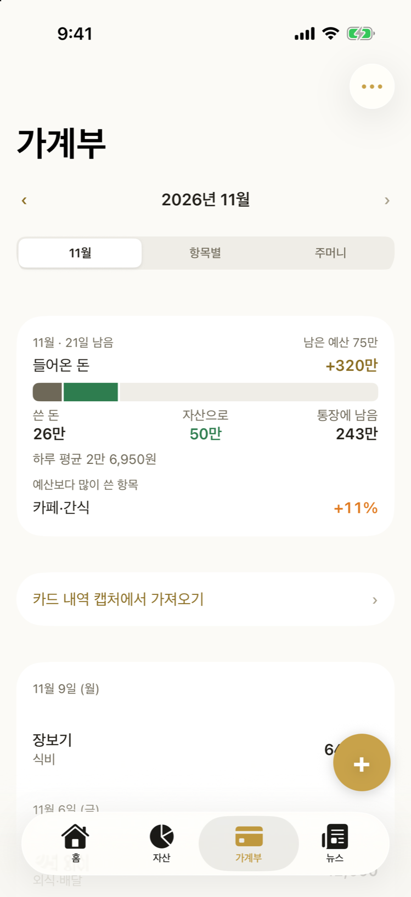

쓴 돈과 모은 돈이 섞이면 생기는 일
대부분의 가계부는 돈이 통장에서 나가면 지출입니다. 적금 이체도, 연금저축 납입도, 증권 계좌로 보낸 돈도 전부 지출 칸에 쌓입니다. 그러면 두 가지가 안 보입니다.
- 이번 달 정말 얼마를 썼는지. 저축을 많이 한 달일수록 지출이 커 보입니다.
- 이번 달 얼마를 모았는지. 지출 속에 묻혀서 따로 더해 봐야 압니다.
「저축」이라는 지출 항목을 만들어 구분하는 방법도 있지만, 합계에서는 여전히 한 덩어리입니다.
골고루는 셋으로 나눕니다
기록할 때 맨 위에서 셋 중 하나를 고릅니다.
| 구분 | 무엇을 적나 |
|---|---|
| 지출 | 써서 없어진 돈 — 식비, 교통, 월세 |
| 수입 | 들어온 돈 — 월급, 이자 |
| 자산으로 | 적금 · 연금 · 증권 계좌처럼 내 자산으로 옮긴 돈 |
그리고 가계부 탭 맨 위 카드가 한 달을 이렇게 보여 줍니다. 들어온 돈이 쓴 돈 · 자산으로 보낸 돈 · 통장에 남은 돈으로 어떻게 나뉘었는지 막대 하나로요.


이렇게 적으면 보이는 것
- 쓴 돈은 진짜 소비만 남습니다. 예산과 견줄 때 저축 때문에 넘쳐 보이지 않습니다.
- 자산으로는 그 달에 모은 돈입니다. 들어온 돈에서 차지하는 비중이 곧 그 달의 저축률입니다.
- 통장에 남은 돈은 쓰지도 모으지도 않은 돈입니다. 여기가 매달 크다면 더 모을 여지가 있다는 뜻입니다.
계획한 저축은 반복으로
매달 같은 날 나가는 적금 · 연금 납입은 「자산으로」 기록에 반복(매달)을 걸어 두면 됩니다. 항목별 화면의 「자산으로」 칸에서 보낸 돈과 계획이 나란히 보이고, 반복이 걸린 줄은 「예정」으로 표시됩니다. 이번 달에 아직 안 보낸 저축이 무엇인지 한눈에 봅니다.
자산 화면과 같이 보면
골고루는 원래 자산을 보는 앱입니다. 가계부에서 「자산으로」 보낸 돈이 쌓이는 곳이 자산 탭의 계좌들이고요. 한쪽에서는 이번 달 얼마를 보냈는지, 다른 쪽에서는 그 돈이 지금 얼마가 됐는지를 봅니다. 가계부와 자산관리를 한 앱에 둔 이유입니다.
함께 보기
안드로이드 테스터 모집 중 — 뭐타지 · 복지비 청구 · 메트로놈는 아이폰에 나와 있고, 안드로이드는 구글 플레이 정식 공개 전입니다. 먼저 써 보실 분은 테스트 참여로 오세요.